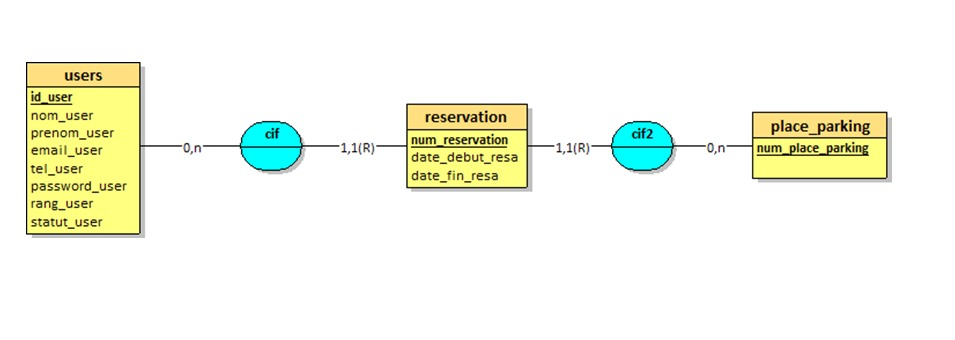

Intitulé de la réalisation professionnelle :
Création d’une application (PHP) de gestion de place de parking
Objectif de ce projet
Pouvoir gérer au mieux les différentes places au sein d’un parking, l’organisme dispose d’une application qui va permettre par le biais de son administrateur de gérer les places disponibles au sein d’un parking.
Aspect fonctionnel :
- Le front-office doit être sécurisé et n’accepter que les demandes du personnel des ligues.
- Les inscriptions au service de réservation de place doivent être validées (ou créées) par un administrateur.
- L’administrateur, seul utilisateur du back-office, doit pouvoir éditer la liste des places et gérer les inscriptions des utilisateurs.
- Lorsqu’un utilisateur en fait la demande, une place libre lui est attribuée aléatoirement et immédiatement par l’application, la réservation expire automatiquement au bout d’une durée par défaut déterminée par l’administrateur.
- Si une demande ne peut pas être satisfaite, l’utilisateur est placé en liste d’attente.
- L’utilisateur ne peut pas choisir la date à laquelle une place lui est attribué, les réservations sont toujours immédiates. Un utilisateur ne peut pas faire une demande de réservation s’il est en file d’attente ou qu’il occupe une place
- Un utilisateur ou l’administrateur peuvent fermer une réservation avant la date d’expiration prévue. Une fois celle-ci expirée, l’utilisateur doit refaire une demande s’il souhaite obtenir une place.
MCD
